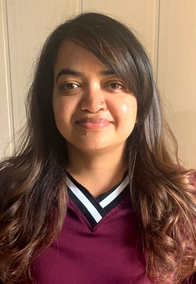

|
I'm working as an Assistant Professor in the CSE Department and AIDE Department at MNIT Jaipur since January 2024. Before that I was an Institute Post Doctoral Fellow at IIT Madras. I recieved my Ph.D. from the CSE Department at IIT Jammu advised by Dr. Vinit Jakhetiya in January 2023. I primarily work in the area of Image Processing, Computer Vison and Machine Learning. My main focus includes analyzing and enhancing the perceptual quality of super-resolved images/videos, 3D synthesized views. I completed my M.Tech. from SLIET Longowal in 2018 and B.Tech from HPTU in 2016. ***I am seeking highly motivated PhD scholars to join my research group. Contact me if interested.*** 🎉 Please visit the newly launched BhaVIL Lab website for our latest research, publications, projects, datasets, and opportunities. |
 |
{kind=link}
|
03/08/2024- I recieved Young Women Scientist Award of computational resourses worth ₹ 5 Lacs from IIT(BHU). 19/02/2024- One paper has been accepted in IEEE Transactions on Multimedia. 11/01/2024- I have joined MNIT Jaipur as an Assistant Professor. 16/04/2023- I have joined IIT Madras as an Institute Post Doctoral Fellow. 05/04/2023- One paper has been accepted in CVPR Workshops 2023 (NTIRE: New trends in image restoration and enhancement). 07/01/2023- I successfully defended my Ph.D. Thesis. 04/09/2022- One paper has been accepted in IEEE Transactions on Multimedia. 15/03/2022- Started working with Dr. Sunil Jaiswal, Head R&D, K|Lens GmbH 25/12/2021- Selected as PIEF candidate by IGSTC for a 6 months internship in Germany. (Results Link) 30/11/2021- One paper has been accepted in AAAI Student Abstract Program. 04/10/2021- Two papers has been accepted in IEEE Transactions on Image Processing. 15/06/2021- Our team has been awarded 600 USD sponsored by Google in ICASSP 2021 SPGC Grand Challenge on being Runner Ups. Spring 2024- CST310 Computer Graphics Course Website Spring 2024- CS Computer Organization and Architecture Course Website Fall 2024- CST437 Neural Networks Course Website Fall 2024- 22CST101 Programming with Python Course Website |

|
Mehran Jeelani*, Sadbhawna Thakur*, Noshaba Cheema, Klaus Illgner, Philipp Slusallek, Sunil Jaiswal, IEEE Conference on Computer Vision and Pattern Recognition (CVPR) Workshops, 2023 Paper This work shows how varied random degradations can contribute to learning an effective VSR model, especially for real-world video artifacts. |

|
Sadbhawna Thakur, Vinit jakhetiya, Badri N. Subudhi, Sunil Jaiswal, Leida Li, Weisi Lin, IEEE Transactions on Multimedia, 2022 Paper In this work, we propose a new and efficient quality assessment algorithm based upon the variation in the depth of 3D synthesized and reference views. |

|
Sadbhawna Thakur, Vinit jakhetiya, Badri N. Subudhi, Harshit Shakya, Deebha Mumtaz AAAI 2022 Paper We created a test dataset to analyze the need for a new perceptual metric for 3D synthesized views. |

|
Sadbhawna Thakur, Vinit jakhetiya, Shubham Chaudhary, Badri N. Subudhi, Sharadh Chandra Guntuku, Weisi Lin, IEEE Transactions on Image Processing, 2021 project page / Paper In this work, we extract the perceptually important deep features from the pre-trained VGG-16 architectures on the Laplacian pyramid to predict the quality of 3D synthesized views. |

|
Sadbhawna Thakur, Vinit jakhetiya, Sharadh Chandra Guntuku, Deebha Mumtaz, Badri N. Subudhi, IEEE Transactions on Image Processing, 2021 project page / Paper We proposed a Convolutional Neural Network (CNN) based algorithm that identifies the blocks with stretching artifacts and further incorporates the number of blocks with the stretching artifacts to predict the quality of 3D-synthesized views. |

|
Shubham Chaudhary, Sadbhawna Thakur, Vinit jakhetiya, Badri N. Subudhi, Ujjwal Baid, Sharadh Chandra Guntuku ICASSP, 2021 project page / Paper We proposed a two-stage Convolutional Neural Network (CNN) based classification framework for detecting COVID-19 and Community Acquired Pneumonia (CAP) using the chest Computed Tomography (CT) scan images |

|
Sadbhawna Thakur, Vinit jakhetiya, Deebha Mumtaz, Sunil Jaiswal MMSP 2020, 2021 project page / Paper We proposed a perceptual metric for 3D views based on the difference in propoerties of synthetic and natural images. |
Last updated on January 11, 2024 | Thanks Dr. Jonathan T. Barron for this awesome template.